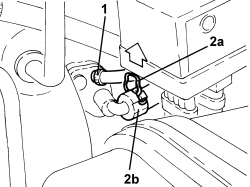
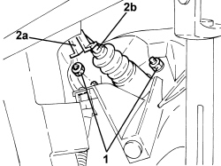

1820B21 MASTER CYLINDER (PUMP) - R R FOR RIGHT HAND DRIVE VERSIONS
- Path
- Procedures > 18 CLUTCH UNIT > 1820 CLUTCH RELEASE CONTROLS > 1820B HYDRAULIC CLUTCH SYSTEM > 1820B21 MASTER CYLINDER (PUMP) - R R FOR RIGHT HAND DRIVE VERSIONS
- Kind
- repair procedure (removal / refitting; the operation number is the code)
- Applies to
- engines: 1.9 JTD 16v; all production periods
- Interactive page
- https://sloeber94.github.io/elrnDB-fCrm/en/#/194004008
Applies to: engines: 1.9 JTD 16v; all production periods
 Removing
Removing
 Refitting
Refitting- Replace the brake-clutch fluid reservoir plug using the tool.
Tool | Description | Function | Validity |
|---|---|---|---|
2000001400 | Plug | Brake/clutch fluid reservoir cap |
1. Loosen the band and disconnect the flexible pipe from the clutch reservoir to the master cylinder, master cylinder side.
2. Lift the retaining clip (2a) and disconnect the clutch hydraulic circuit vibration damper (2b), clutch master cylinder side.

Applies to: engines: 1.9 JTD 16v; all production periods
Op. 7040A24 LOWER FACIA COVER TRIM - R+R
Op. 7040A26 STEERING COLUMN TRIM - R+R
Op. 7040A44 LEFT DASHBOARD SIDE TRIM - R.R.
Op. 5010C57 LEFT LOWER AIR DIFFUSER - R R
Op. 5580C23 DRIVE SIDE KNEE PROTECTION AIR BAG MODULE R. R.
Op. 7040A30 LEFT LOWER DASHBOARD TRIM - R.R.
1. Undo the nuts fixing the clutch master cylinder to the pedals.
2. Adjust the clip (2a) to disconnect the master cylinder push rod (2b) from the clutch pedal.

Applies to: engines: 1.9 JTD 16v; all production periods
- Working in the engine compartment, release the clutch master cylinder and remove it.
Applies to: engines: 1.9 JTD 16v; all production periods
Refitting
Removing- Refit the clutch master cylinder in position.
- Connect the clutch master cylinder push rod to the pedal by doing up the clip.
- Tighten the nuts fixing the clutch master cylinder to the pedals to the recommended torque.
Component | Fastening | dia | Value (daNm) | Validity |
|---|---|---|---|---|
Clutch master cylinder (pump) | Bolt | M8 | (pedals side) 1.8 - 2.2 |
Op. 7040A30 LEFT LOWER DASHBOARD TRIM - R.R.
Op. 5580C23 DRIVE SIDE KNEE PROTECTION AIR BAG MODULE R. R.
Op. 5010C57 LEFT LOWER AIR DIFFUSER - R R
Op. 7040A44 LEFT DASHBOARD SIDE TRIM - R.R.
Op. 7040A26 STEERING COLUMN TRIM - R+R
Op. 7040A24 LOWER FACIA COVER TRIM - R+R
- Fit the retaining clip completely, then engage the clutch hydraulic circuit vibration damper on the clutch master cylinder until the actual clip is attached.
- Connect the flexible pipe from clutch reservoir to master cylinder, master cylinder side and tighten the band.
- Replace the tool with the brake-clutch fluid reservoir plug.
Tool | Description | Function | Validity |
|---|---|---|---|
2000001400 | Plug | Brake/clutch fluid reservoir cap |
Op. 0010T64 BRAKE AND/OR CLUTCH FLUID CHECK LEVEL AND TOP UP AS NECESSARY
Topics linked from this page (8)
- 0010T64 BRAKE AND/OR CLUTCH FLUID CHECK LEVEL AND TOP UP AS NECESSARY
- 0010T67 HYDRAULIC CLUTCH SYSTEM - BLEED AIR
- 5010C57 LEFT LOWER AIR DIFFUSER - R R
- 5580C23 DRIVE SIDE KNEE PROTECTION AIR BAG MODULE R. R.
- 7040A24 LOWER FACIA COVER TRIM - R+R
- 7040A26 STEERING COLUMN TRIM - R+R
- 7040A30 LEFT LOWER DASHBOARD TRIM - R.R.
- 7040A44 LEFT DASHBOARD SIDE TRIM - R.R.